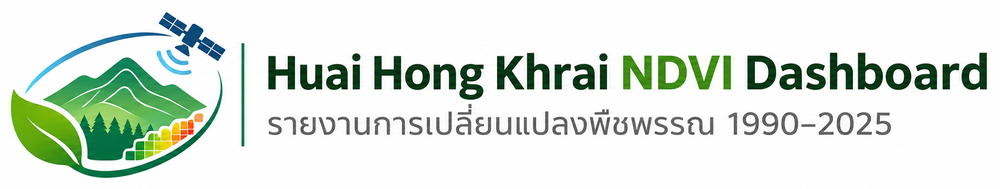

<!DOCTYPE html>
<html lang="th">
<head>
<meta charset="utf-8">
<meta name="viewport" content="width=device-width, initial-scale=1">
<link rel="icon" href="img/favicon.png">
<title>NDVI ห้วยฮ่องไคร้ 1990–2025</title>
<link rel="stylesheet" href="https://cdnjs.cloudflare.com/ajax/libs/leaflet/1.9.4/leaflet.min.css">
<link href="https://fonts.googleapis.com/css2?family=Noto+Sans+Thai:wght@400;600&family=Noto+Serif+Thai:wght@600&display=swap" rel="stylesheet">
<style>
:root{--bg:#f3f5ef;--ink:#1d2a22;--mut:#5d6b61;--line:#cfd6c8;--acc:#1a6b3c;--card:#fff;--warn:#c2410c}
@media(prefers-color-scheme:dark){:root{--bg:#141b16;--ink:#e6ece4;--mut:#9aa89d;--line:#2d3a30;--acc:#6fcf8f;--card:#1b241e;--warn:#fb923c}}
*{box-sizing:border-box}html,body{height:100%;margin:0}
body{display:flex;font:15px/1.55 'Noto Sans Thai',sans-serif;background:var(--bg);color:var(--ink)}
#map{flex:1;min-width:0}
aside{width:420px;max-width:100%;overflow-y:auto;padding:20px 22px 28px;border-left:1px solid var(--line)}
.logo{display:block;width:100%;height:auto;background:#fff;border-radius:10px;padding:8px 10px;margin:0 0 10px}
h1{position:absolute;width:1px;height:1px;overflow:hidden;clip:rect(0 0 0 0)}
.sub{color:var(--mut);font-size:13px;margin:0 0 16px}
.hero{display:flex;align-items:baseline;gap:14px;flex-wrap:wrap}
#yr{font:600 64px/1 'Noto Serif Thai',serif;color:var(--acc)}
#yrinfo{color:var(--mut);font-size:13px}
#yrinfo b{color:var(--ink);font-size:18px}
.ctl{display:flex;gap:10px;align-items:center;margin:10px 0 14px}
#play{width:38px;height:38px;border-radius:50%;border:1px solid var(--acc);background:none;color:var(--acc);font-size:15px;cursor:pointer}
#sl{flex:1;accent-color:var(--acc)}
.seg{display:flex;border:1px solid var(--line);border-radius:8px;overflow:hidden;margin-bottom:12px}
.seg button{flex:1;padding:8px 2px;border:0;background:none;color:var(--ink);font:inherit;font-size:12.5px;cursor:pointer}
.seg button[aria-pressed=true]{background:var(--acc);color:var(--bg)}
button:focus-visible,input:focus-visible,summary:focus-visible{outline:2px solid var(--acc);outline-offset:2px}
#lg{font-size:13px;margin-bottom:6px}
#lg i{display:inline-block;width:14px;height:14px;margin:0 6px -2px 0;border:1px solid #8886}
#lg span{display:inline-block;margin:0 12px 4px 0}
.bar{height:12px;border-radius:3px;background:linear-gradient(90deg,#8b4513,#fdae61,#ffffbf,#a6d96a,#1a9850,#006837);margin:2px 0}
.bar+div{display:flex;justify-content:space-between;color:var(--mut);font-size:12px}
h2{font-size:15px;margin:24px 0 8px}
.cw{height:210px}
table{width:100%;border-collapse:collapse;font-size:13.5px}
td,th{padding:5px 6px;border-bottom:1px solid var(--line);text-align:right}
td:first-child,th:first-child{text-align:left}
th{color:var(--mut);font-weight:400}
details{margin-top:10px}summary{cursor:pointer;color:var(--acc)}
.note{color:var(--mut);font-size:12.5px;margin-top:22px}
.px{image-rendering:pixelated}
.sw{flex:1}#flags{position:relative;height:8px;margin:0 8px}
#flags i{position:absolute;top:0;border:4px solid transparent;border-bottom:7px solid #e8890c;border-top:0;margin-left:-4px}
.warn{color:var(--warn)}
#cmp{display:none;gap:8px;align-items:center;margin:6px 0 10px;flex-wrap:wrap}
body.cmp #cmp{display:flex}body.cmp .hero,body.cmp .ctl{display:none}
select{font:inherit;padding:5px 8px;border:1px solid var(--line);border-radius:6px;background:var(--card);color:var(--ink)}
.divr{position:absolute;top:0;bottom:0;left:50%;width:3px;margin-left:-1px;background:#fff;z-index:1000;display:none;touch-action:none;cursor:ew-resize;box-shadow:0 0 4px #0008}
.divr::after{content:'⇔';position:absolute;top:50%;left:50%;transform:translate(-50%,-50%);width:36px;height:36px;border-radius:50%;background:#fff;color:#1d2a22;display:grid;place-items:center;font-size:17px;box-shadow:0 0 6px #0009}
.badge{position:absolute;top:10px;z-index:1000;background:#000b;color:#fff;padding:2px 12px;border-radius:6px;font-weight:600;display:none;pointer-events:none}
body.cmp .divr,body.cmp .badge{display:block}
#ptinfo{font-size:13px;color:var(--mut);margin-bottom:6px}
@media(max-width:820px){body{flex-direction:column;height:auto}#map{flex:none;height:55vh}aside{width:100%;border:0;overflow:visible}#yr{font-size:52px}}
</style>
</head>
<body>
<div id="map" role="application" aria-label="แผนที่ NDVI"></div>
<aside>

<h1>Huai Hong Khrai NDVI Dashboard: ห้วยฮ่องไคร้ NDVI 1990–2025</h1>
<p class="sub">ศูนย์ศึกษาการพัฒนาห้วยฮ่องไคร้ · Landsat 5/7/8/9 · ค่ามัธยฐานฤดูกาล พ.ย.–ก.พ. · 30 ม.</p>

<div class="hero"><div id="yr">2025</div><div id="yrinfo"></div></div>
<div class="ctl"><button id="play" aria-label="เล่นอัตโนมัติ">▶</button>
<div class="sw"><input id="sl" type="range" min="1990" max="2025" value="2025" aria-label="เลือกปี" style="width:100%"><div id="flags" aria-hidden="true"></div></div></div>

<div class="seg" role="group" aria-label="ชั้นข้อมูล">
<button data-m="ndvi" aria-pressed="true">NDVI รายปี</button>
<button data-m="change" aria-pressed="false">เปลี่ยนแปลง</button>
<button data-m="trans" aria-pressed="false">สถานะ</button>
<button data-m="cmp" aria-pressed="false">เทียบ 2 ปี</button></div>
<div id="cmp"><select id="ya" aria-label="ปีฝั่งซ้าย"></select><span>เทียบกับ</span><select id="yb" aria-label="ปีฝั่งขวา"></select><div id="cmpinfo" style="flex-basis:100%;font-size:13px;color:var(--mut)"></div></div>
<div id="lg"></div>

<h2>แนวโน้มรายปี</h2>
<div class="seg" role="group" aria-label="ตัวชี้วัดกราฟ">
<button data-c="mean" aria-pressed="true">NDVI เฉลี่ย</button>
<button data-c="high" aria-pressed="false">พื้นที่ NDVI ≥ 0.60</button></div>
<div class="cw"><canvas id="ch"></canvas></div>

<p class="sub" style="margin:6px 0 0"><span class="warn">▲</span> = ปีที่ข้อมูลน่าเชื่อถือน้อย (น้อยกว่า 3 ภาพ หรือพื้นที่ข้อมูลครอบคลุมต่ำกว่า 99%)</p>
<h2>จุดที่คลิกบนแผนที่</h2>
<p id="pthint" class="sub">คลิกที่แผนที่เพื่อดู NDVI ของจุดนั้นย้อนหลัง 36 ปี</p>
<div id="ptbox" hidden><div id="ptinfo"></div><div class="cw"><canvas id="pc"></canvas></div></div>
<h2>การเปลี่ยนแปลง NDVI 1990 → 2025</h2>
<table id="t1"></table>
<h2>การเปลี่ยนสถานะ (เกณฑ์สูง ≥ 0.60)</h2>
<table id="t2"></table>
<details><summary>ตารางสถิติรายปี</summary><table id="t3"></table></details>

<p class="note">ผลลัพธ์แสดงการเปลี่ยนแปลงของค่า NDVI ไม่ใช่การจำแนกพื้นที่ป่าโดยตรง ปีที่มีภาพน้อย (เช่น 1991 มี 2 ภาพ) ค่ามัธยฐานอาจไม่เสถียร และปี 2012 มีพื้นที่ข้อมูลครอบคลุมต่ำกว่าปีอื่น ควรตีความร่วมกับจำนวนภาพ ข้อมูล: USGS Landsat Collection 2 Level-2 ประมวลผลด้วย Google Earth Engine</p>
</aside>

<script src="https://cdnjs.cloudflare.com/ajax/libs/leaflet/1.9.4/leaflet.min.js"></script>
<script src="https://cdnjs.cloudflare.com/ajax/libs/Chart.js/4.4.1/chart.umd.min.js"></script>
<script src="data.js"></script>
<script src="ndvi_grid.js"></script>
<script>
const $=s=>document.querySelector(s),A=D.annual,Y0=1990,Y1=2025;
const fmt=(x,d=0)=>Number(x).toLocaleString('th-TH',{maximumFractionDigits:d});
const cv=n=>getComputedStyle(document.documentElement).getPropertyValue(n).trim();
const bad=d=>d.n<3||d.cov<99;
const reason=d=>d.n<3?`ภาพน้อย (${d.n} ภาพ) ค่ามัธยฐานอาจไม่เสถียร`:`พื้นที่ข้อมูลครอบคลุมเพียง ${d.cov}%`;
const sg=v=>(v>=0?'+':'')+v.toFixed(3);
let year=2025,mode='ndvi',timer=null,ya=1990,yb=2025,frac=.5,mk=null,pc=null;

// ข้อมูลรายพิกเซล
const GR=(()=>{const s=atob(G.b64),a=new Uint8Array(s.length);for(let i=0;i<s.length;i++)a[i]=s.charCodeAt(i);return a})();
const val=(y,r,c)=>{const q=GR[(y-Y0)*G.h*G.w+r*G.w+c];return q===255?null:+(q/254*(G.hi-G.lo)+G.lo).toFixed(3)};

// แผนที่
const map=L.map('map',{zoomSnap:.25}).fitBounds(D.bounds);
L.tileLayer('https://server.arcgisonline.com/ArcGIS/rest/services/World_Imagery/MapServer/tile/{z}/{y}/{x}',
 {maxZoom:18,attribution:'Imagery © Esri, Maxar, Earthstar Geographics'}).addTo(map);
L.geoJSON(D.roi,{style:{color:'#fff',weight:2,fill:false,dashArray:'5 4'}}).addTo(map);
const ov=L.imageOverlay('img/ndvi_2025.png',D.bounds,{opacity:.85,className:'px'}).addTo(map);

// โหมดเปรียบเทียบ 2 ปี
const pL=map.createPane('cmpL'),pR=map.createPane('cmpR');pL.style.zIndex=pR.style.zIndex=450;
const oL=L.imageOverlay('img/ndvi_1990.png',D.bounds,{pane:'cmpL',opacity:.9,className:'px'});
const oR=L.imageOverlay('img/ndvi_2025.png',D.bounds,{pane:'cmpR',opacity:.9,className:'px'});
function clip(){
 const nw=map.containerPointToLayerPoint([0,0]),se=map.containerPointToLayerPoint(map.getSize()),x=nw.x+(se.x-nw.x)*frac;
 pL.style.clip=`rect(${nw.y}px,${x}px,${se.y}px,${nw.x}px)`;
 pR.style.clip=`rect(${nw.y}px,${se.x}px,${se.y}px,${x}px)`}
map.on('move zoom resize',clip);
const mc=map.getContainer(),dv=L.DomUtil.create('div','divr',mc),bl=L.DomUtil.create('div','badge',mc),br=L.DomUtil.create('div','badge',mc);
bl.style.left='10px';br.style.right='10px';
L.DomEvent.disableClickPropagation(dv);
dv.onpointerdown=e=>{dv.setPointerCapture(e.pointerId);dv._d=1};
dv.onpointermove=e=>{if(!dv._d)return;const r=mc.getBoundingClientRect();
 frac=Math.min(.98,Math.max(.02,(e.clientX-r.left)/r.width));dv.style.left=frac*100+'%';clip()};
dv.onpointerup=()=>{dv._d=0};

const LG={
 ndvi:'<div class="bar"></div><div><span>−0.2</span><span>0.3</span><span>0.9</span></div>',
 change:[['d73027','NDVI ลดลง (≤ −0.10)'],['f7f7f7','ค่อนข้างคงที่'],['1a9850','NDVI เพิ่มขึ้น (≥ +0.10)']],
 trans:[['bdbdbd','ต่ำ → ต่ำ'],['41ab5d','ต่ำ → สูง'],['ef3b2c','สูง → ต่ำ'],['006d2c','สูง → สูง']]};

function draw(){
 const cmp=mode==='cmp',d=A[year-Y0];
 document.body.classList.toggle('cmp',cmp);
 if(cmp){
  ov.remove();oL.addTo(map);oR.addTo(map);
  oL.setUrl(`img/ndvi_${ya}.png`);oR.setUrl(`img/ndvi_${yb}.png`);
  bl.textContent=ya;br.textContent=yb;clip();
  const a=A[ya-Y0],b=A[yb-Y0];
  $('#cmpinfo').innerHTML=`NDVI เฉลี่ย ${a.mean.toFixed(3)} → ${b.mean.toFixed(3)} (${sg(b.mean-a.mean)})`+
   [a,b].filter(bad).map(x=>`<br><span class="warn">⚠ ปี ${x.y}: ${reason(x)}</span>`).join('');
 }else{
  oL.remove();oR.remove();ov.addTo(map);
  ov.setUrl(mode==='ndvi'?`img/ndvi_${year}.png`:mode==='change'?'img/change.png':'img/transition.png');
  $('#yr').textContent=year;$('#sl').value=year;
  $('#yrinfo').innerHTML=`ฤดูกาล พ.ย. ${year} – ก.พ. ${year+1}<br>NDVI เฉลี่ย <b>${d.mean.toFixed(3)}</b> · ${d.n} ภาพ`+
   (bad(d)?`<br><span class="warn">⚠ ${reason(d)}</span>`:'');
 }
 const l=LG[cmp?'ndvi':mode];
 $('#lg').innerHTML=typeof l==='string'?l:l.map(([c,t])=>`<span><i style="background:#${c}"></i>${t}</span>`).join('')+
  '<div style="color:var(--mut);font-size:12px">เปรียบเทียบปี 1990 กับ 2025 (ไม่เปลี่ยนตามสไลเดอร์)</div>';
 chart.update('none');
 if(pc){pc.data.datasets[0].pointRadius=A.map(x=>x.y===year?7:bad(x)?5:2);pc.update('none')}
}
document.querySelectorAll('[data-m]').forEach(b=>b.onclick=()=>{
 if(timer)$('#play').click();
 mode=b.dataset.m;document.querySelectorAll('[data-m]').forEach(x=>x.setAttribute('aria-pressed',x===b));draw()});
$('#sl').oninput=e=>{year=+e.target.value;draw()};
$('#flags').innerHTML=A.filter(bad).map(d=>`<i style="left:${(d.y-Y0)/(Y1-Y0)*100}%" title="${d.y}: ${reason(d)}"></i>`).join('');
$('#play').onclick=()=>{
 if(timer){clearInterval(timer);timer=null;$('#play').textContent='▶';return}
 if(mode!=='ndvi'){mode='ndvi';document.querySelectorAll('[data-m]').forEach(x=>x.setAttribute('aria-pressed',x.dataset.m==='ndvi'))}
 if(year>=Y1)year=Y0-1;
 $('#play').textContent='❚❚';
 timer=setInterval(()=>{year++;draw();if(year>=Y1){clearInterval(timer);timer=null;$('#play').textContent='▶'}},650)};
['#ya','#yb'].forEach((s,k)=>{
 $(s).innerHTML=A.map(d=>`<option value="${d.y}"${d.y===(k?2025:1990)?' selected':''}>${d.y}${bad(d)?' ⚠':''}</option>`).join('');
 $(s).onchange=e=>{k?yb=+e.target.value:ya=+e.target.value;draw()}});

// กราฟแนวโน้ม
const acc=cv('--acc'),mut=cv('--mut'),line=cv('--line');
const chart=new Chart($('#ch'),{type:'line',
 data:{labels:A.map(d=>d.y),datasets:[{data:A.map(d=>d.mean),borderColor:acc,borderWidth:2,tension:.25,
  pointRadius:c=>c.dataIndex===year-Y0?7:bad(A[c.dataIndex])?5:2,
  pointStyle:A.map(d=>bad(d)?'triangle':'circle'),pointBackgroundColor:A.map(d=>bad(d)?'#e8890c':acc)}]},
 options:{maintainAspectRatio:false,animation:false,plugins:{legend:{display:false},
  tooltip:{callbacks:{afterLabel:c=>bad(A[c.dataIndex])?'⚠ '+reason(A[c.dataIndex]):''}}},
  onClick:(e,els)=>{if(els.length){year=A[els[0].index].y;if(mode==='cmp')return;draw()}},
  scales:{x:{ticks:{maxTicksLimit:8,color:mut},grid:{display:false}},y:{ticks:{color:mut},grid:{color:line}}}}});
document.querySelectorAll('[data-c]').forEach(b=>b.onclick=()=>{
 document.querySelectorAll('[data-c]').forEach(x=>x.setAttribute('aria-pressed',x===b));
 chart.data.datasets[0].data=A.map(d=>b.dataset.c==='mean'?d.mean:d.high);chart.update('none')});

// คลิกแผนที่ ดู NDVI ของพิกเซลย้อนหลัง
map.on('click',e=>{
 const {lat,lng}=e.latlng,[[s,w],[n,ea]]=D.bounds;
 const c=Math.floor((lng-w)/(ea-w)*G.w),r=Math.floor((n-lat)/(n-s)*G.h);
 if(c<0||r<0||c>=G.w||r>=G.h)return;
 const ser=A.map(d=>val(d.y,r,c)),ok=ser.filter(v=>v!==null);
 if(!ok.length)return;
 if(mk)mk.setLatLng(e.latlng);else mk=L.circleMarker(e.latlng,{radius:7,color:'#fff',weight:2,fillColor:'#f59e0b',fillOpacity:1}).addTo(map);
 const f=ser.find(v=>v!==null),l=[...ser].reverse().find(v=>v!==null);
 const txt=`${lat.toFixed(5)}, ${lng.toFixed(5)} · ${A[ser.indexOf(f)].y}: ${f.toFixed(2)} → ${A[ser.lastIndexOf(l)].y}: ${l.toFixed(2)} (${sg(l-f)})`;
 mk.bindPopup(`<b>NDVI จุดที่เลือก</b><br>${txt}<br><small>กราฟอยู่ในแผงด้านข้าง/ด้านล่าง</small>`).openPopup();
 $('#pthint').hidden=true;$('#ptbox').hidden=false;$('#ptinfo').textContent=txt;
 const data={labels:A.map(d=>d.y),datasets:[
  {label:'จุดที่เลือก',data:ser,borderColor:acc,borderWidth:2,tension:.2,spanGaps:false,
   pointRadius:A.map(d=>d.y===year?7:bad(d)?5:2),pointStyle:A.map(d=>bad(d)?'triangle':'circle'),pointBackgroundColor:A.map(d=>bad(d)?'#e8890c':acc)},
  {label:'เฉลี่ยทั้งพื้นที่',data:A.map(d=>d.mean),borderColor:mut,borderDash:[4,4],borderWidth:1,pointRadius:0}]};
 if(pc){pc.data=data;pc.update('none')}
 else pc=new Chart($('#pc'),{type:'line',data,options:{maintainAspectRatio:false,animation:false,
  plugins:{legend:{labels:{color:mut,boxWidth:18}}},
  scales:{x:{ticks:{maxTicksLimit:8,color:mut},grid:{display:false}},y:{ticks:{color:mut},grid:{color:line}}}}});
});

// ตาราง
const tt=Object.values(D.trans).reduce((s,v)=>s+v,0);
$('#t1').innerHTML='<tr><th>ประเภท</th><th>ไร่</th><th>ร้อยละ</th></tr>'+
 [[1,'NDVI ลดลง'],[2,'ค่อนข้างคงที่'],[3,'NDVI เพิ่มขึ้น']].map(([k,n])=>`<tr><td>${n}</td><td>${fmt(D.change[k][0])}</td><td>${fmt(D.change[k][1],1)}</td></tr>`).join('');
$('#t2').innerHTML='<tr><th>การเปลี่ยนสถานะ</th><th>ไร่</th><th>ร้อยละ</th></tr>'+
 [[1,'ต่ำ → ต่ำ'],[2,'ต่ำ → สูง'],[3,'สูง → ต่ำ'],[4,'สูง → สูง']].map(([k,n])=>`<tr><td>${n}</td><td>${fmt(D.trans[k])}</td><td>${fmt(D.trans[k]/tt*100,1)}</td></tr>`).join('');
$('#t3').innerHTML='<tr><th>ปี</th><th>NDVI</th><th>ภาพ</th><th>สูง (ไร่)</th><th>สูง %</th></tr>'+
 A.map(d=>`<tr${bad(d)?' class="warn" title="'+reason(d)+'"':''}><td>${d.y}${bad(d)?' ⚠':''}</td><td>${d.mean.toFixed(3)}</td><td>${d.n}</td><td>${fmt(d.high)}</td><td>${d.hp}</td></tr>`).join('');
draw();
</script>
</body>
</html>
